← 回股市觀察
逐檔技術線型分析
2026/09/16 · 成交金額上市前 50 名 ＋ 上櫃前 20 名（共 70 檔）· 公開資料整理
45848.9
加權指數 +337.41 點（+0.74%）
統計範圍：當日成交金額上市前 50 名 ＋ 上櫃前 20 名（共 70 檔，皆為 4 位數代號的個股，不含 ETF／權證）。
兩個市場各自取前 N 名後合併呈現，卡片上標示市場別（上市／上櫃），清單也附市場分布。
條件統計：上市 上升趨勢：底底高 ＋ 頭頭高 10 檔、突破頸線 10 檔、跌破前低（線型轉弱） 12 檔、底底高 23 檔、頭頭高 18 檔、站上月線 23 檔、月線向上 31 檔、外資買超 22 檔、量價攻擊（收紅＋大量） 10 檔；上櫃 上升趨勢：底底高 ＋ 頭頭高 3 檔、突破頸線 5 檔、跌破前低（線型轉弱） 0 檔、底底高 5 檔、頭頭高 9 檔、站上月線 16 檔、月線向上 15 檔、外資買超 10 檔、量價攻擊（收紅＋大量） 10 檔。
五項全滿足（底底高＋頭頭高＋站上月線＋月線向上＋5 日線向上）：上市 聯電、臻鼎-KY、中信金、台勝科；上櫃 信昌電、聯一光。
資料日 2026/09/16。籌碼：上市為證交所三大法人、上櫃為櫃買中心三大法人；上櫃另附融資餘額。
每一檔都附上 K 線圖與線型說明：黃圈是轉折低點、粉圈是轉折高點、藍線是月線。
圖上兩條水平虛線、左側標數值：高點頸線（紅，連到最多「轉折高點」的那條水平線，代表上方壓力帶；收盤站上就算突破）與
低點頸線（綠，連到最多「轉折低點」的那條水平線，代表下方支撐帶；收盤跌破就算跌破）；
兩條線都只看最近 6 個轉折點、容忍同一價位帶 4%，連不到 2 個轉折點就不畫。
卡片的標籤可以點回上方對應清單，清單裡的股名也可以點到該檔。
本頁為公開資料（證交所每日收盤行情與三大法人、櫃買中心每日收盤行情與三大法人、Yahoo 股市日線）的整理與觀察，
不構成投資建議，不報牌、不預測、不下買賣決策。
好條件最多的（前 10）
不好條件最多的（前 10）
好條件（8 項）：站上月線、月線向上、底底高、頭頭高、突破頸線、相對大盤強、外資買超、量價攻擊（收紅＋大量）。
不好條件（8 項）：跌破前低、今日下跌、相對大盤弱、在月線之下、量增下跌（出貨）、外資賣超、月線下彎、收盤跌破前一日低點。
兩邊都是同一組資料（日線結構＋當日收盤量價籌碼）算出來的「符合項目數」，只是方向相反；
條件數不是評分、也不是推薦，不構成投資建議。
上升趨勢：底底高 ＋ 頭頭高（13 上市 10／上櫃 3）
跌破前低（線型轉弱）（12 上市 12／上櫃 0）
量價攻擊（收紅＋大量）（20 上市 10／上櫃 10）
逐檔分析（70 檔）
底部墊高、未過前高 成交金額 498.13 億・全榜第 1 名（上市第 1 名）
好條件 2/8：月線向上、底底高
不好條件 5/8：今日下跌、相對大盤弱、在月線之下、量增下跌（出貨）、外資賣超

今天帶量收黑、跌破月線 2411.75，離高點頸線 2444.17 還差 2.6%，底部還在墊高（但高點沒同步創高）。
- 月線位置：收盤 2380 在月線 2411.75 之下；5 日線 2401 也在月線之下（短均在下）；月線向上、5 日線走平或向下
- 量能：成交量是 20 日均量的 1.21 倍，比 20 日均量大不少；收黑卻量增，量價背離
- 關鍵價位：高點頸線 2444.17 還沒突破，差 2.6%；最近轉折高點 2505（低於 5.0%）；最近轉折低點 2375（高於 0.2%）
- 轉折結構：低點 2335、2350、2375 墊高 1.7%（底底高），但高點 2445、2445、2505 沒有同步創高；還沒確認的轉折低點 09-14 2380、09-16 2375；還沒確認的轉折高點 09-01 2440、09-15 2405（圖上虛線小圈）
高點墊高、底部不穩 成交金額 302.18 億・全榜第 2 名（上市第 2 名）
好條件 5/8：站上月線、月線向上、頭頭高、相對大盤強、外資買超
不好條件 0/8：無

今天收紅、但成交量比平均少、站上月線 4248.75，離高點頸線 4530 還差 0.0%，高點還在墊高（但底部沒同步墊高）。
- 月線位置：收盤 4530 在月線 4248.75 之上；5 日線 4565 也在月線之上（短均在上）；月線向上、5 日線走平或向下
- 量能：成交量是 20 日均量的 0.88 倍，比 20 日均量少一些；收紅但量縮，量價背離
- 關鍵價位：高點頸線 4530 還沒突破，差 0.0%；最近轉折高點 4855（低於 6.7%）；最近轉折低點 3655（高於 23.9%）
- 轉折結構：高點 4125、4400、4855 墊高 17.7%（頭頭高），但低點 2990、3810、3655 沒有同步墊高；還沒確認的轉折低點 09-10 4520、09-15 4430；還沒確認的轉折高點 09-02 4565、09-16 4625（圖上虛線小圈）
上升趨勢（底底高＋頭頭高） 成交金額 199.12 億・全榜第 3 名（上市第 3 名）
好條件 3/8：月線向上、底底高、頭頭高
不好條件 6/8：今日下跌、相對大盤弱、在月線之下、量增下跌（出貨）、外資賣超、收盤跌破前一日低點

今天帶量收黑、跌破月線 2333.28，離高點頸線 2302.31 還差 6.0%，轉折結構仍是底底高＋頭頭高。
- 月線位置：收盤 2165 在月線 2333.28 之下；5 日線 2281 也在月線之下（短均在下）；月線向上、5 日線走平或向下
- 量能：成交量是 20 日均量的 2.33 倍，比 20 日均量大不少；收黑卻量增，量價背離
- 關鍵價位：高點頸線 2302.31 還沒突破，差 6.0%；最近轉折高點 2875（低於 24.7%）；最近轉折低點 2053.44（高於 5.4%）
- 轉折結構：低點 1631.02、1962.92、2053.44 一路墊高 25.9%、高點 2145.64、2259.63、2875 也一路墊高 34.0%，是底底高＋頭頭高；還沒確認的轉折低點 09-10 2270、09-16 2085；還沒確認的轉折高點 09-15 2345（圖上虛線小圈）
底部墊高、未過前高 成交金額 181.52 億・全榜第 4 名（上市第 4 名）
好條件 3/8：底底高、相對大盤強、量價攻擊（收紅＋大量）
不好條件 4/8：跌破前低、在月線之下、外資賣超、月線下彎

今天帶量收紅、跌破月線 1752.75，跌破前一個轉折低點（高點頸線 1892.5 還在收盤上方），底部還在墊高（但高點沒同步創高）。
- 月線位置：收盤 1710 在月線 1752.75 之下；5 日線 1659 也在月線之下（短均在下）；月線走平或向下、5 日線走平或向下
- 量能：成交量是 20 日均量的 1.12 倍，比 20 日均量大一些；收紅又量增，量價配合
- 關鍵價位：高點頸線 1892.5 還沒突破、還在收盤上方 9.6%；最近轉折高點 1885（低於 9.3%）；最近轉折低點 1725（低於 0.9%）
- 轉折結構：低點 1425、1655、1725 墊高 21.1%（底底高），但高點 2005、1870、1885 沒有同步創高；還沒確認的轉折低點 09-14 1560；還沒確認的轉折高點 09-01 1865、09-16 1730（圖上虛線小圈）
區間或轉弱 成交金額 176.82 億・全榜第 5 名（上市第 5 名）
好條件 2/8：相對大盤強、外資買超
不好條件 2/8：在月線之下、月線下彎

今天收紅、但成交量比平均少、跌破月線 510.825，離高點頸線 550.25 還差 10.5%，轉折還沒走出明顯方向。
- 月線位置：收盤 492.5 在月線 510.825 之下；5 日線 487.8 也在月線之下（短均在下）；月線走平或向下、5 日線走平或向下
- 量能：成交量是 20 日均量的 0.53 倍，比 20 日均量少很多；收紅但量縮，量價背離
- 關鍵價位：高點頸線 550.25 還沒突破，差 10.5%；最近轉折高點 540（低於 8.8%）；最近轉折低點 470（高於 4.8%）
- 轉折結構：低點 480、480、470 與高點 553、569、540 都沒有明顯遞增，屬於區間震盪或轉弱；還沒確認的轉折低點 09-15 465.5；還沒確認的轉折高點 09-03 539、09-16 495（圖上虛線小圈）
上升趨勢（底底高＋頭頭高） 成交金額 165.2 億・全榜第 6 名（上市第 6 名）
好條件 6/8：站上月線、月線向上、底底高、頭頭高、相對大盤強、外資買超
不好條件 0/8：無

今天收紅、但成交量比平均少、站上月線 131.125，離高點頸線 143.62 還差 1.1%，轉折結構仍是底底高＋頭頭高。
- 月線位置：收盤 142 在月線 131.125 之上；5 日線 141.2 也在月線之上（短均在上）；月線向上、5 日線向上
- 量能：成交量是 20 日均量的 0.69 倍，比 20 日均量少很多；收紅但量縮，量價背離
- 關鍵價位：高點頸線 143.62 還沒突破，差 1.1%；最近轉折高點 145.5（低於 2.4%）；最近轉折低點 123（高於 15.4%）
- 轉折結構：低點 112、117、123 一路墊高 9.8%、高點 128、136.5、145.5 也一路墊高 13.7%，是底底高＋頭頭高；還沒確認的轉折低點 09-14 135、09-16 138；還沒確認的轉折高點 09-14 143.5、09-16 142.5（圖上虛線小圈）
上升趨勢（底底高＋頭頭高） 成交金額 152.88 億・全榜第 8 名（上市第 7 名）
好條件 5/8：月線向上、底底高、頭頭高、相對大盤強、量價攻擊（收紅＋大量）
不好條件 3/8：跌破前低、在月線之下、外資賣超

今天收紅、跌破月線 6588.75，跌破前一個轉折低點（高點頸線 6915 還在收盤上方），轉折結構仍是底底高＋頭頭高。
- 月線位置：收盤 6225 在月線 6588.75 之下；5 日線 6331 也在月線之下（短均在下）；月線向上、5 日線走平或向下
- 量能：成交量是 20 日均量的 1.01 倍，跟 20 日均量差不多
- 關鍵價位：高點頸線 6915 還沒突破、還在收盤上方 10.0%；最近轉折高點 7995（低於 22.1%）；最近轉折低點 6350（低於 2.0%）
- 轉折結構：低點 3670、4230、6350 一路墊高 73.0%、高點 4175、4770、7995 也一路墊高 91.5%，是底底高＋頭頭高；還沒確認的轉折低點 09-15 5930；還沒確認的轉折高點 09-11 6900、09-16 6415（圖上虛線小圈）
區間或轉弱 成交金額 148.62 億・全榜第 9 名（上市第 8 名）
好條件 0/8：無
不好條件 5/8：今日下跌、相對大盤弱、在月線之下、外資賣超、月線下彎

今天收黑、成交量也比平均少、跌破月線 554.05，離高點頸線 604.5 還差 11.3%，轉折還沒走出明顯方向。
- 月線位置：收盤 536 在月線 554.05 之下；5 日線 546.8 也在月線之下（短均在下）；月線走平或向下、5 日線走平或向下
- 量能：成交量是 20 日均量的 0.70 倍，比 20 日均量少很多
- 關鍵價位：高點頸線 604.5 還沒突破，差 11.3%；最近轉折高點 605（低於 11.4%）；最近轉折低點 511（高於 4.9%）
- 轉折結構：低點 547、515、511 與高點 668、610、605 都沒有明顯遞增，屬於區間震盪或轉弱；還沒確認的轉折低點 09-14 520、09-16 526；還沒確認的轉折高點 09-09 585、09-15 558（圖上虛線小圈）
區間或轉弱 成交金額 138.92 億・全榜第 10 名（上市第 9 名）
好條件 2/8：相對大盤強、外資買超
不好條件 2/8：在月線之下、月線下彎

今天收紅、但成交量比平均少、跌破月線 176.675，離高點頸線 190.9 還差 11.5%，轉折還沒走出明顯方向。
- 月線位置：收盤 169 在月線 176.675 之下；5 日線 167.9 也在月線之下（短均在下）；月線走平或向下、5 日線走平或向下
- 量能：成交量是 20 日均量的 0.64 倍，比 20 日均量少很多；收紅但量縮，量價背離
- 關鍵價位：高點頸線 190.9 還沒突破，差 11.5%；最近轉折高點 192（低於 12.0%）；最近轉折低點 165.5（高於 2.1%）
- 轉折結構：低點 165、168.5、165.5 與高點 192、192、192 都沒有明顯遞增，屬於區間震盪或轉弱；還沒確認的轉折低點 09-15 158.5；還沒確認的轉折高點 09-03 185.5、09-16 169.5（圖上虛線小圈）
區間或轉弱 成交金額 114.24 億・全榜第 13 名（上市第 10 名）
好條件 5/8：站上月線、月線向上、突破頸線、相對大盤強、量價攻擊（收紅＋大量）
不好條件 1/8：外資賣超

今天帶量收紅、站上月線 529.225，已站上高點頸線 544.67，轉折還沒走出明顯方向。
- 月線位置：收盤 550 在月線 529.225 之上；5 日線 522.4 也在月線之下（短均在下）；月線向上、5 日線向上
- 量能：成交量是 20 日均量的 1.27 倍，比 20 日均量大不少；收紅又量增，量價配合
- 關鍵價位：高點頸線 544.67 已站上；最近轉折高點 599（低於 8.2%）；最近轉折低點 493.5（高於 11.4%）
- 轉折結構：低點 311、237、493.5 與高點 407.5、387.5、599 都沒有明顯遞增，屬於區間震盪或轉弱；還沒確認的轉折低點 09-08 500、09-14 482；還沒確認的轉折高點 09-11 537、09-16 555（圖上虛線小圈）
區間或轉弱 成交金額 113.35 億・全榜第 14 名（上市第 11 名）
好條件 1/8：相對大盤強
不好條件 3/8：在月線之下、外資賣超、月線下彎

今天收紅、但成交量比平均少、跌破月線 1018.1，離高點頸線 1000.25 還差 3.9%，轉折還沒走出明顯方向。
- 月線位置：收盤 961 在月線 1018.1 之下；5 日線 970.6 也在月線之下（短均在下）；月線走平或向下、5 日線向上
- 量能：成交量是 20 日均量的 0.50 倍，比 20 日均量少很多；收紅但量縮，量價背離
- 關鍵價位：高點頸線 1000.25 還沒突破，差 3.9%；最近轉折高點 1005（低於 4.4%）；最近轉折低點 873（高於 10.1%）
- 轉折結構：低點 1030、1030、873 與高點 1005、1005、1005 都沒有明顯遞增，屬於區間震盪或轉弱；還沒確認的轉折低點 09-14 932、09-16 940；還沒確認的轉折高點 09-15 986（圖上虛線小圈）
底部墊高、未過前高 成交金額 108.98 億・全榜第 15 名（上市第 12 名）
好條件 4/8：站上月線、月線向上、底底高、相對大盤強
不好條件 1/8：外資賣超

今天收紅、但成交量比平均少、站上月線 221.125，離高點頸線 239.17 還差 6.3%，底部還在墊高（但高點沒同步創高）。
- 月線位置：收盤 224 在月線 221.125 之上；5 日線 231.6 也在月線之上（短均在上）；月線向上、5 日線向上
- 量能：成交量是 20 日均量的 0.54 倍，比 20 日均量少很多；收紅但量縮，量價背離
- 關鍵價位：高點頸線 239.17 還沒突破，差 6.3%；最近轉折高點 245.5（低於 8.8%）；最近轉折低點 218（高於 2.8%）
- 轉折結構：低點 135.5、174、218 墊高 60.9%（底底高），但高點 215、250、245.5 沒有同步創高；還沒確認的轉折低點 09-08 229、09-14 220.5；還沒確認的轉折高點 09-07 240、09-16 232（圖上虛線小圈）
臻鼎-KY 4958 上市
493.5 +16.0
上升趨勢（底底高＋頭頭高） 成交金額 106.25 億・全榜第 16 名（上市第 13 名）
好條件 6/8：站上月線、月線向上、底底高、頭頭高、相對大盤強、外資買超
不好條件 0/8：無

今天收紅、但成交量比平均少、站上月線 481.05，離高點頸線 507.33 還差 2.7%，轉折結構仍是底底高＋頭頭高。
- 月線位置：收盤 493.5 在月線 481.05 之上；5 日線 490 也在月線之上（短均在上）；月線向上、5 日線向上
- 量能：成交量是 20 日均量的 0.80 倍，比 20 日均量少很多；收紅但量縮，量價背離
- 關鍵價位：高點頸線 507.33 還沒突破，差 2.7%；最近轉折高點 550（低於 10.3%）；最近轉折低點 446.5（高於 10.5%）
- 轉折結構：低點 368、421.5、446.5 一路墊高 21.3%、高點 502、522、550 也一路墊高 9.6%，是底底高＋頭頭高；還沒確認的轉折低點 09-14 475.5、09-16 471；還沒確認的轉折高點 09-08 524、09-16 498（圖上虛線小圈）
底部墊高、未過前高 成交金額 102.52 億・全榜第 17 名（上市第 14 名）
好條件 3/8：站上月線、月線向上、底底高
不好條件 4/8：今日下跌、相對大盤弱、量增下跌（出貨）、外資賣超

今天帶量收黑、站上月線 483.75，離高點頸線 547.67 還差 6.0%，底部還在墊高（但高點沒同步創高）。
- 月線位置：收盤 515 在月線 483.75 之上；5 日線 523.4 也在月線之上（短均在上）；月線向上、5 日線向上
- 量能：成交量是 20 日均量的 1.82 倍，比 20 日均量大不少；收黑卻量增，量價背離
- 關鍵價位：高點頸線 547.67 還沒突破，差 6.0%；最近轉折高點 552（低於 6.7%）；最近轉折低點 491（高於 4.9%）
- 轉折結構：低點 358.5、374.5、491 墊高 37.0%（底底高），但高點 437.5、555、552 沒有同步創高；還沒確認的轉折低點 09-14 493、09-16 506；還沒確認的轉折高點 09-15 536（圖上虛線小圈）
高點墊高、底部不穩 成交金額 101.59 億・全榜第 18 名（上市第 15 名）
好條件 7/8：站上月線、月線向上、頭頭高、突破頸線、相對大盤強、外資買超、量價攻擊（收紅＋大量）
不好條件 0/8：無

今天帶量收紅、站上月線 150.475，已站上高點頸線 164.08，高點還在墊高（但底部沒同步墊高）。
- 月線位置：收盤 168.5 在月線 150.475 之上；5 日線 157.1 也在月線之上（短均在上）；月線向上、5 日線向上
- 量能：成交量是 20 日均量的 1.67 倍，比 20 日均量大不少；收紅又量增，量價配合
- 關鍵價位：高點頸線 164.08 已站上；最近轉折高點 168（高於 0.3%）；最近轉折低點 146（高於 15.4%）
- 轉折結構：高點 152.5、161、168 墊高 10.2%（頭頭高），但低點 134、129.5、146 沒有同步墊高；還沒確認的轉折低點 09-09 150、09-14 146；還沒確認的轉折高點 09-14 164、09-16 168.5（圖上虛線小圈）
區間或轉弱 成交金額 89.09 億・全榜第 21 名（上市第 16 名）
好條件 1/8：相對大盤強
不好條件 3/8：在月線之下、外資賣超、月線下彎

今天收紅、但成交量比平均少、跌破月線 830.3，離高點頸線 834 還差 1.7%，轉折還沒走出明顯方向。
- 月線位置：收盤 820 在月線 830.3 之下；5 日線 812.4 也在月線之下（短均在下）；月線走平或向下、5 日線向上
- 量能：成交量是 20 日均量的 0.61 倍，比 20 日均量少很多；收紅但量縮，量價背離
- 關鍵價位：高點頸線 834 還沒突破，差 1.7%；最近轉折高點 835（低於 1.8%）；最近轉折低點 766（高於 7.0%）
- 轉折結構：低點 541、766、766 與高點 960、835、835 都沒有明顯遞增，屬於區間震盪或轉弱；還沒確認的轉折低點 09-10 792、09-14 784；還沒確認的轉折高點 09-03 882、09-16 832（圖上虛線小圈）
上升趨勢（底底高＋頭頭高） 成交金額 86.92 億・全榜第 22 名（上市第 17 名）
好條件 4/8：月線向上、底底高、頭頭高、相對大盤強
不好條件 3/8：跌破前低、在月線之下、外資賣超

今天收紅、但成交量比平均少、跌破月線 3252，跌破前一個轉折低點（高點頸線 3532.5 還在收盤上方），轉折結構仍是底底高＋頭頭高。
- 月線位置：收盤 3175 在月線 3252 之下；5 日線 3286 也在月線之上（短均在上）；月線向上、5 日線走平或向下
- 量能：成交量是 20 日均量的 0.84 倍，比 20 日均量少很多；收紅但量縮，量價背離
- 關鍵價位：高點頸線 3532.5 還沒突破、還在收盤上方 10.1%；最近轉折高點 3595（低於 11.7%）；最近轉折低點 3245（低於 2.2%）
- 轉折結構：低點 2625、2740、3245 一路墊高 23.6%、高點 2965、3320、3595 也一路墊高 21.2%，是底底高＋頭頭高；還沒確認的轉折低點 09-15 3100、09-16 3100；還沒確認的轉折高點 09-10 3470（圖上虛線小圈）
區間或轉弱 成交金額 86.77 億・全榜第 23 名（上市第 18 名）
好條件 2/8：相對大盤強、外資買超
不好條件 2/8：在月線之下、月線下彎

今天收紅、但成交量比平均少、跌破月線 1135.5，離高點頸線 1341.67 還差 17.6%，轉折還沒走出明顯方向。
- 月線位置：收盤 1105 在月線 1135.5 之下；5 日線 1079 也在月線之下（短均在下）；月線走平或向下、5 日線向上
- 量能：成交量是 20 日均量的 0.71 倍，比 20 日均量少很多；收紅但量縮，量價背離
- 關鍵價位：高點頸線 1341.67 還沒突破，差 17.6%；最近轉折高點 1125（低於 1.8%）；最近轉折低點 1010（高於 9.4%）
- 轉折結構：低點 792、1070、1010 與高點 1380、1335、1125 都沒有明顯遞增，屬於區間震盪或轉弱；還沒確認的轉折低點 09-08 1015、09-14 1025；還沒確認的轉折高點 09-03 1225、09-16 1115（圖上虛線小圈）
底部墊高、未過前高 成交金額 85.91 億・全榜第 24 名（上市第 19 名）
好條件 3/8：月線向上、底底高、外資買超
不好條件 5/8：跌破前低、今日下跌、相對大盤弱、在月線之下、量增下跌（出貨）

今天帶量收黑、跌破月線 5626.75，跌破前一個轉折低點（高點頸線 5975 還在收盤上方），底部還在墊高（但高點沒同步創高）。
- 月線位置：收盤 5240 在月線 5626.75 之下；5 日線 5585 也在月線之下（短均在下）；月線向上、5 日線走平或向下
- 量能：成交量是 20 日均量的 1.24 倍，比 20 日均量大不少；收黑卻量增，量價背離
- 關鍵價位：高點頸線 5975 還沒突破、還在收盤上方 12.3%；最近轉折高點 6000（低於 12.7%）；最近轉折低點 5480（低於 4.4%）
- 轉折結構：低點 3895、4910、5480 墊高 40.7%（底底高），但高點 5620、6095、6000 沒有同步創高；還沒確認的轉折低點 09-03 5590、09-16 5210；還沒確認的轉折高點 09-10 5885、09-14 5920（圖上虛線小圈）
區間或轉弱 成交金額 85.85 億・全榜第 25 名（上市第 20 名）
好條件 1/8：外資買超
不好條件 6/8：跌破前低、今日下跌、相對大盤弱、在月線之下、月線下彎、收盤跌破前一日低點

今天收黑、跌破月線 5467.25，跌破前一個轉折低點（高點頸線 5730 還在收盤上方），轉折還沒走出明顯方向。
- 月線位置：收盤 5085 在月線 5467.25 之下；5 日線 5257 也在月線之下（短均在下）；月線走平或向下、5 日線走平或向下
- 量能：成交量是 20 日均量的 0.98 倍，跟 20 日均量差不多
- 關鍵價位：高點頸線 5730 還沒突破、還在收盤上方 11.3%；最近轉折高點 5645（低於 9.9%）；最近轉折低點 5255（低於 3.2%）
- 轉折結構：低點 3930、5255、5255 與高點 6470、5960、5645 都沒有明顯遞增，屬於區間震盪或轉弱；還沒確認的轉折低點 09-11 5210、09-16 5030；還沒確認的轉折高點 09-01 5735、09-07 5580（圖上虛線小圈）
高點墊高、底部不穩 成交金額 77.88 億・全榜第 27 名（上市第 21 名）
好條件 4/8：站上月線、月線向上、頭頭高、相對大盤強
不好條件 1/8：外資賣超

今天收紅、但成交量比平均少、站上月線 5929.75，離高點頸線 6446.67 還差 4.3%，高點還在墊高（但底部沒同步墊高）。
- 月線位置：收盤 6170 在月線 5929.75 之上；5 日線 6190 也在月線之上（短均在上）；月線向上、5 日線向上
- 量能：成交量是 20 日均量的 0.66 倍，比 20 日均量少很多；收紅但量縮，量價背離
- 關鍵價位：高點頸線 6446.67 還沒突破，差 4.3%；最近轉折高點 6490（低於 4.9%）；最近轉折低點 5680（高於 8.6%）
- 轉折結構：高點 4475、5990、6490 墊高 45.0%（頭頭高），但低點 5230、5205、5680 沒有同步墊高；還沒確認的轉折低點 09-10 5850、09-14 5850；還沒確認的轉折高點 09-10 6275、09-14 6575（圖上虛線小圈）
區間或轉弱 成交金額 76.2 億・全榜第 28 名（上市第 22 名）
好條件 6/8：站上月線、月線向上、突破頸線、相對大盤強、外資買超、量價攻擊（收紅＋大量）
不好條件 0/8：無

今天帶量收紅、站上月線 27.395，已站上高點頸線 27.74，轉折還沒走出明顯方向。
- 月線位置：收盤 29.4 在月線 27.395 之上；5 日線 29.48 也在月線之上（短均在上）；月線向上、5 日線向上
- 量能：成交量是 20 日均量的 1.05 倍，比 20 日均量大一些；收紅又量增，量價配合
- 關鍵價位：高點頸線 27.74 已站上；最近轉折高點 32.2（低於 8.7%）；最近轉折低點 24.6（高於 19.5%）
- 轉折結構：低點 22、25.25、24.6 與高點 27.9、27.4、32.2 都沒有明顯遞增，屬於區間震盪或轉弱；還沒確認的轉折低點 09-04 26.35、09-15 27.75；還沒確認的轉折高點 09-03 28.85、09-16 29.6（圖上虛線小圈）
區間或轉弱 成交金額 66.82 億・全榜第 29 名（上市第 23 名）
好條件 0/8：無
不好條件 6/8：跌破前低、今日下跌、相對大盤弱、在月線之下、外資賣超、月線下彎

今天收黑、跌破月線 3886.75，跌破前一個轉折低點（高點頸線 4312.5 還在收盤上方），轉折還沒走出明顯方向。
- 月線位置：收盤 3345 在月線 3886.75 之下；5 日線 3599 也在月線之下（短均在下）；月線走平或向下、5 日線走平或向下
- 量能：成交量是 20 日均量的 0.99 倍，跟 20 日均量差不多
- 關鍵價位：高點頸線 4312.5 還沒突破、還在收盤上方 22.4%；最近轉折高點 4350（低於 23.1%）；最近轉折低點 3585（低於 6.7%）
- 轉折結構：低點 3245、2630、3585 與高點 3720、4530、4350 都沒有明顯遞增，屬於區間震盪或轉弱；還沒確認的轉折低點 09-03 4010、09-16 3310；還沒確認的轉折高點 09-04 4275、09-10 4075（圖上虛線小圈）
上升趨勢（底底高＋頭頭高） 成交金額 63.66 億・全榜第 30 名（上市第 24 名）
好條件 4/8：底底高、頭頭高、相對大盤強、外資買超
不好條件 2/8：在月線之下、月線下彎

今天收紅、但成交量比平均少、跌破月線 70.26，離高點頸線 73.48 還差 4.9%，轉折結構仍是底底高＋頭頭高。
- 月線位置：收盤 69.9 在月線 70.26 之下；5 日線 70.34 也在月線之上（短均在上）；月線走平或向下、5 日線走平或向下
- 量能：成交量是 20 日均量的 0.66 倍，比 20 日均量少很多；收紅但量縮，量價背離
- 關鍵價位：高點頸線 73.48 還沒突破，差 4.9%；最近轉折高點 75.3（低於 7.2%）；最近轉折低點 67（高於 4.3%）
- 轉折結構：低點 48、66.2、67 一路墊高 39.6%、高點 72.9、73.7、75.3 也一路墊高 3.3%，是底底高＋頭頭高；還沒確認的轉折低點 09-15 66.7；還沒確認的轉折高點 09-03 72（圖上虛線小圈）
高點墊高、底部不穩 成交金額 60.62 億・全榜第 32 名（上市第 25 名）
好條件 5/8：站上月線、月線向上、頭頭高、相對大盤強、外資買超
不好條件 0/8：無

今天收紅、但成交量比平均少、站上月線 710.05，離高點頸線 802.33 還差 3.8%，高點還在墊高（但底部沒同步墊高）。
- 月線位置：收盤 772 在月線 710.05 之上；5 日線 755.2 也在月線之上（短均在上）；月線向上、5 日線向上
- 量能：成交量是 20 日均量的 0.87 倍，比 20 日均量少一些；收紅但量縮，量價背離
- 關鍵價位：高點頸線 802.33 還沒突破，差 3.8%；最近轉折高點 826（低於 6.5%）；最近轉折低點 632（高於 22.2%）
- 轉折結構：高點 745、795、826 墊高 10.9%（頭頭高），但低點 605、590、632 沒有同步墊高；還沒確認的轉折低點 09-14 717、09-16 720；還沒確認的轉折高點 09-16 786（圖上虛線小圈）
區間或轉弱 成交金額 59.68 億・全榜第 34 名（上市第 26 名）
好條件 0/8：無
不好條件 4/8：相對大盤弱、在月線之下、外資賣超、月線下彎

今天收紅、但成交量比平均少、跌破月線 183.525，離高點頸線 188.5 還差 2.9%，轉折還沒走出明顯方向。
- 月線位置：收盤 183 在月線 183.525 之下；5 日線 183.4 也在月線之下（短均在下）；月線走平或向下、5 日線走平或向下
- 量能：成交量是 20 日均量的 0.64 倍，比 20 日均量少很多；收紅但量縮，量價背離
- 關鍵價位：高點頸線 188.5 還沒突破，差 2.9%；最近轉折高點 200.5（低於 8.7%）；最近轉折低點 174（高於 5.2%）
- 轉折結構：低點 180.5、172.5、174 與高點 206、188、200.5 都沒有明顯遞增，屬於區間震盪或轉弱；還沒確認的轉折低點 09-14 179.5、09-16 181；還沒確認的轉折高點 09-10 192、09-16 185.5（圖上虛線小圈）
區間或轉弱 成交金額 57.43 億・全榜第 35 名（上市第 27 名）
好條件 4/8：站上月線、月線向上、相對大盤強、外資買超
不好條件 0/8：無

今天收紅、但成交量比平均少、站上月線 604.7，離高點頸線 629.83 還差 3.9%，轉折還沒走出明顯方向。
- 月線位置：收盤 605 在月線 604.7 之上；5 日線 615.4 也在月線之上（短均在上）；月線向上、5 日線向上
- 量能：成交量是 20 日均量的 0.55 倍，比 20 日均量少很多；收紅但量縮，量價背離
- 關鍵價位：高點頸線 629.83 還沒突破，差 3.9%；最近轉折高點 653（低於 7.4%）；最近轉折低點 578（高於 4.7%）
- 轉折結構：低點 564、565、578 與高點 643、630、653 都沒有明顯遞增，屬於區間震盪或轉弱；還沒確認的轉折低點 09-15 592；還沒確認的轉折高點 09-07 628、09-16 610（圖上虛線小圈）
底部墊高、未過前高 成交金額 57.4 億・全榜第 36 名（上市第 28 名）
好條件 5/8：站上月線、月線向上、底底高、相對大盤強、量價攻擊（收紅＋大量）
不好條件 1/8：外資賣超

今天帶量收紅、站上月線 334.7，離高點頸線 342.2 還差 0.5%，底部還在墊高（但高點沒同步創高）。
- 月線位置：收盤 340.5 在月線 334.7 之上；5 日線 335.7 也在月線之上（短均在上）；月線向上、5 日線走平或向下
- 量能：成交量是 20 日均量的 1.29 倍，比 20 日均量大不少；收紅又量增，量價配合
- 關鍵價位：高點頸線 342.2 還沒突破，差 0.5%；最近轉折高點 351.5（低於 3.1%）；最近轉折低點 328（高於 3.8%）
- 轉折結構：低點 317.5、319.5、328 墊高 3.3%（底底高），但高點 337.5、339、351.5 沒有同步創高；還沒確認的轉折低點 09-03 332.5、09-14 328.5；還沒確認的轉折高點 09-01 342、09-16 341（圖上虛線小圈）
區間或轉弱 成交金額 57.35 億・全榜第 37 名（上市第 29 名）
好條件 0/8：無
不好條件 5/8：跌破前低、相對大盤弱、在月線之下、外資賣超、月線下彎

今天收黑、成交量也比平均少、跌破月線 2027.75，跌破前一個轉折低點（高點頸線 2212.5 還在收盤上方），轉折還沒走出明顯方向。
- 月線位置：收盤 1840 在月線 2027.75 之下；5 日線 1881 也在月線之下（短均在下）；月線走平或向下、5 日線走平或向下
- 量能：成交量是 20 日均量的 0.84 倍，比 20 日均量少很多
- 關鍵價位：高點頸線 2212.5 還沒突破、還在收盤上方 16.8%；最近轉折高點 2235（低於 17.7%）；最近轉折低點 1950（低於 5.6%）
- 轉折結構：低點 2075、1960、1950 與高點 2595、2385、2235 都沒有明顯遞增，屬於區間震盪或轉弱；還沒確認的轉折低點 09-15 1830、09-16 1830；還沒確認的轉折高點 09-04 2190、09-15 1895（圖上虛線小圈）
區間或轉弱 成交金額 55.24 億・全榜第 38 名（上市第 30 名）
好條件 1/8：相對大盤強
不好條件 4/8：跌破前低、在月線之下、外資賣超、月線下彎

今天收紅、但成交量比平均少、跌破月線 13395.8，跌破前一個轉折低點（高點頸線 14710 還在收盤上方），轉折還沒走出明顯方向。
- 月線位置：收盤 12045 在月線 13395.8 之下；5 日線 12086 也在月線之下（短均在下）；月線走平或向下、5 日線走平或向下
- 量能：成交量是 20 日均量的 0.95 倍，跟 20 日均量差不多；收紅但量縮，量價背離
- 關鍵價位：高點頸線 14710 還沒突破、還在收盤上方 18.1%；最近轉折高點 14200（低於 15.2%）；最近轉折低點 13310（低於 9.5%）
- 轉折結構：低點 6840、6840、13310 與高點 15085、14815、14200 都沒有明顯遞增，屬於區間震盪或轉弱；還沒確認的轉折低點 09-09 12285、09-15 11665；還沒確認的轉折高點 09-01 14740、09-16 12445（圖上虛線小圈）
底部墊高、未過前高 成交金額 52.95 億・全榜第 41 名（上市第 31 名）
好條件 2/8：底底高、相對大盤強
不好條件 4/8：跌破前低、在月線之下、外資賣超、月線下彎

今天收紅、但成交量比平均少、跌破月線 1058.65，跌破前一個轉折低點（高點頸線 1133.33 還在收盤上方），底部還在墊高（但高點沒同步創高）。
- 月線位置：收盤 992 在月線 1058.65 之下；5 日線 1011.8 也在月線之下（短均在下）；月線走平或向下、5 日線走平或向下
- 量能：成交量是 20 日均量的 0.71 倍，比 20 日均量少很多；收紅但量縮，量價背離
- 關鍵價位：高點頸線 1133.33 還沒突破、還在收盤上方 12.5%；最近轉折高點 1145（低於 13.4%）；最近轉折低點 1030（低於 3.7%）
- 轉折結構：低點 705、915、1030 墊高 46.1%（底底高），但高點 1110、1245、1145 沒有同步創高；還沒確認的轉折低點 09-16 966；還沒確認的轉折高點 09-07 1145（圖上虛線小圈）
區間或轉弱 成交金額 50.31 億・全榜第 43 名（上市第 32 名）
好條件 1/8：相對大盤強
不好條件 3/8：在月線之下、外資賣超、月線下彎

今天收紅、但成交量比平均少、跌破月線 2079.25，離高點頸線 2361.67 還差 15.5%，轉折還沒走出明顯方向。
- 月線位置：收盤 1995 在月線 2079.25 之下；5 日線 1947 也在月線之下（短均在下）；月線走平或向下、5 日線走平或向下
- 量能：成交量是 20 日均量的 0.94 倍，比 20 日均量少一些；收紅但量縮，量價背離
- 關鍵價位：高點頸線 2361.67 還沒突破，差 15.5%；最近轉折高點 2375（低於 16.0%）；最近轉折低點 1930（高於 3.4%）
- 轉折結構：低點 2070、2095、1930 與高點 2555、2360、2375 都沒有明顯遞增，屬於區間震盪或轉弱；還沒確認的轉折低點 09-09 1890、09-14 1810；還沒確認的轉折高點 09-07 2185、09-16 2030（圖上虛線小圈）
高點墊高、底部不穩 成交金額 49.58 億・全榜第 44 名（上市第 33 名）
好條件 5/8：站上月線、月線向上、頭頭高、相對大盤強、外資買超
不好條件 0/8：無

今天收紅、但成交量比平均少、站上月線 95.27，離高點頸線 109.17 還差 8.6%，高點還在墊高（但底部沒同步墊高）。
- 月線位置：收盤 99.8 在月線 95.27 之上；5 日線 95.42 也在月線之上（短均在上）；月線向上、5 日線走平或向下
- 量能：成交量是 20 日均量的 0.95 倍，跟 20 日均量差不多；收紅但量縮，量價背離
- 關鍵價位：高點頸線 109.17 還沒突破，差 8.6%；最近轉折高點 111（低於 10.1%）；最近轉折低點 65.2（高於 53.1%）
- 轉折結構：高點 66.3、74.5、111 墊高 67.4%（頭頭高），但低點 50.6、45.3、65.2 沒有同步墊高；還沒確認的轉折低點 09-11 92.4、09-15 90.6；還沒確認的轉折高點 09-11 101.5、09-16 99.8（圖上虛線小圈）
區間或轉弱 成交金額 48.81 億・全榜第 46 名（上市第 34 名）
好條件 0/8：無
不好條件 4/8：相對大盤弱、在月線之下、外資賣超、月線下彎

今天收紅、但成交量比平均少、跌破月線 249.6，離高點頸線 255.6 還差 3.0%，轉折還沒走出明顯方向。
- 月線位置：收盤 248 在月線 249.6 之下；5 日線 248.4 也在月線之下（短均在下）；月線走平或向下、5 日線走平或向下
- 量能：成交量是 20 日均量的 0.66 倍，比 20 日均量少很多；收紅但量縮，量價背離
- 關鍵價位：高點頸線 255.6 還沒突破，差 3.0%；最近轉折高點 259（低於 4.2%）；最近轉折低點 238（高於 4.2%）
- 轉折結構：低點 226.5、242.5、238 與高點 256.5、256.5、259 都沒有明顯遞增，屬於區間震盪或轉弱；還沒確認的轉折低點 09-14 243.5、09-16 246；還沒確認的轉折高點 09-01 256、09-15 250（圖上虛線小圈）
底部墊高、未過前高 成交金額 47.76 億・全榜第 47 名（上市第 35 名）
好條件 4/8：站上月線、底底高、相對大盤強、外資買超
不好條件 1/8：月線下彎

今天收紅、但成交量比平均少、站上月線 47.97，離高點頸線 51.33 還差 5.1%，底部還在墊高（但高點沒同步創高）。
- 月線位置：收盤 48.7 在月線 47.97 之上；5 日線 48.04 也在月線之上（短均在上）；月線走平或向下、5 日線走平或向下
- 量能：成交量是 20 日均量的 0.54 倍，比 20 日均量少很多；收紅但量縮，量價背離
- 關鍵價位：高點頸線 51.33 還沒突破，差 5.1%；最近轉折高點 51.6（低於 5.6%）；最近轉折低點 48（高於 1.5%）
- 轉折結構：低點 40.5、44.95、48 墊高 18.5%（底底高），但高點 52.3、52.4、51.6 沒有同步創高；還沒確認的轉折低點 09-03 48.1、09-14 46.25；還沒確認的轉折高點 09-07 50.7、09-16 48.7（圖上虛線小圈）
高點墊高、底部不穩 成交金額 46.49 億・全榜第 48 名（上市第 36 名）
好條件 4/8：頭頭高、突破頸線、相對大盤強、外資買超
不好條件 2/8：在月線之下、月線下彎
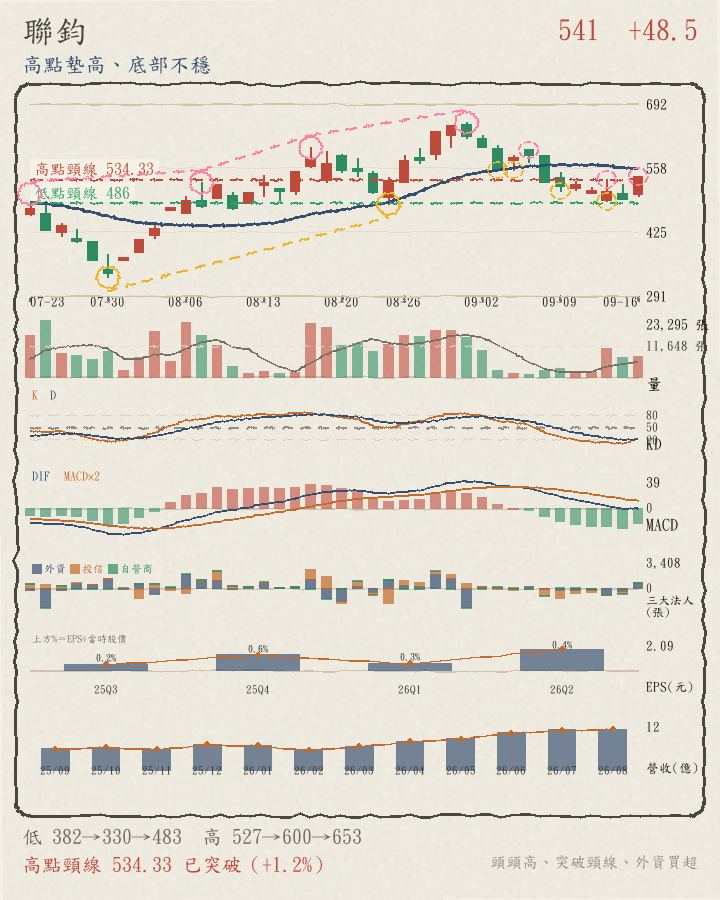
今天收紅、但成交量比平均少、跌破月線 557.375，已站上高點頸線 534.33，高點還在墊高（但底部沒同步墊高）。
- 月線位置：收盤 541 在月線 557.375 之下；5 日線 515.5 也在月線之下（短均在下）；月線走平或向下、5 日線走平或向下
- 量能：成交量是 20 日均量的 0.84 倍，比 20 日均量少很多；收紅但量縮，量價背離
- 關鍵價位：高點頸線 534.33 已站上；最近轉折高點 653（低於 17.2%）；最近轉折低點 483（高於 12.0%）
- 轉折結構：高點 527、600、653 墊高 23.9%（頭頭高），但低點 382.5、330、483 沒有同步墊高；還沒確認的轉折低點 09-09 510、09-14 489；還沒確認的轉折高點 09-14 535、09-16 541（圖上虛線小圈）
底部墊高、未過前高 成交金額 45.66 億・全榜第 49 名（上市第 37 名）
好條件 5/8：站上月線、月線向上、底底高、相對大盤強、外資買超
不好條件 0/8：無
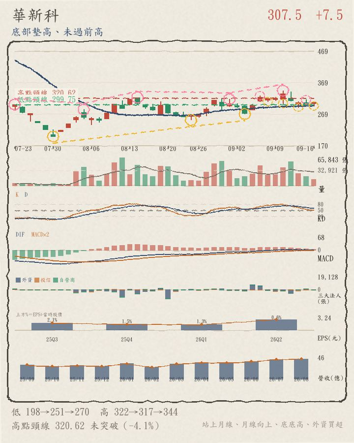
今天收紅、但成交量比平均少、站上月線 295.975，離高點頸線 320.62 還差 4.1%，底部還在墊高（但高點沒同步創高）。
- 月線位置：收盤 307.5 在月線 295.975 之上；5 日線 311.7 也在月線之上（短均在上）；月線向上、5 日線向上
- 量能：成交量是 20 日均量的 0.47 倍，比 20 日均量少很多；收紅但量縮，量價背離
- 關鍵價位：高點頸線 320.62 還沒突破，差 4.1%；最近轉折高點 344（低於 10.6%）；最近轉折低點 270（高於 13.9%）
- 轉折結構：低點 198.5、251、270 墊高 36.0%（底底高），但高點 322、317、344 沒有同步創高；還沒確認的轉折低點 09-14 291、09-16 295.5；還沒確認的轉折高點 09-07 328、09-15 315.5（圖上虛線小圈）
底部墊高、未過前高 成交金額 41.98 億・全榜第 50 名（上市第 38 名）
好條件 4/8：月線向上、底底高、突破頸線、相對大盤強
不好條件 2/8：在月線之下、外資賣超
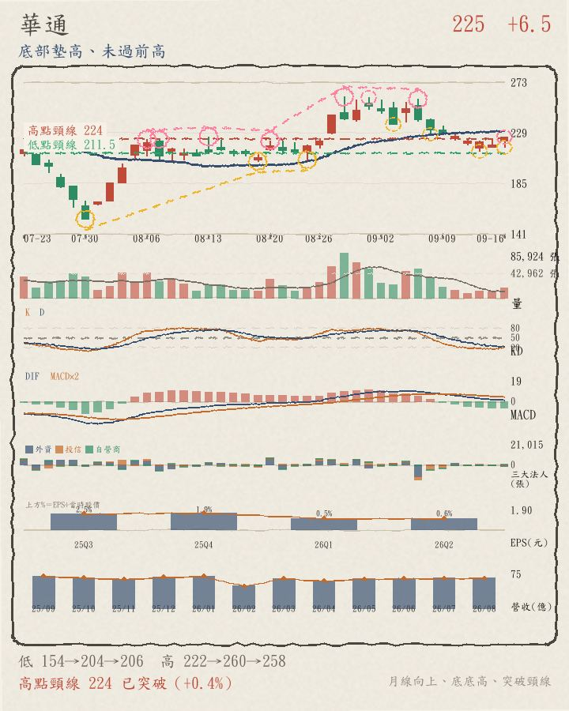
今天收紅、但成交量比平均少、跌破月線 230.675，已站上高點頸線 224，底部還在墊高（但高點沒同步創高）。
- 月線位置：收盤 225 在月線 230.675 之下；5 日線 222.3 也在月線之下（短均在下）；月線向上、5 日線走平或向下
- 量能：成交量是 20 日均量的 0.55 倍，比 20 日均量少很多；收紅但量縮，量價背離
- 關鍵價位：高點頸線 224 已站上；最近轉折高點 258（低於 12.8%）；最近轉折低點 205.5（高於 9.5%）
- 轉折結構：低點 154、204、205.5 墊高 33.4%（底底高），但高點 222、260、258 沒有同步創高；還沒確認的轉折低點 09-14 213、09-16 216；還沒確認的轉折高點 09-01 259.5、09-16 225（圖上虛線小圈）
上升趨勢（底底高＋頭頭高） 成交金額 40.36 億・全榜第 51 名（上市第 39 名）
好條件 5/8：站上月線、月線向上、底底高、頭頭高、相對大盤強
不好條件 1/8：外資賣超
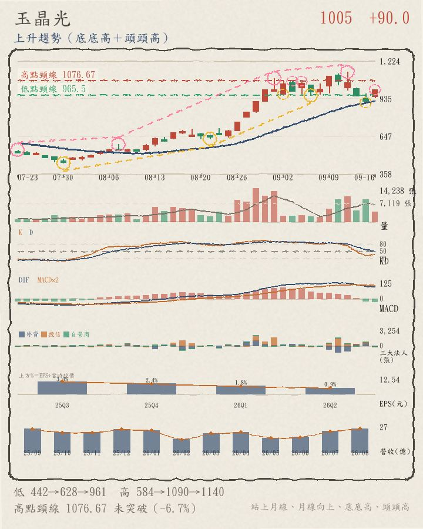
今天收紅、但成交量比平均少、站上月線 918.8，離高點頸線 1076.67 還差 6.7%，轉折結構仍是底底高＋頭頭高。
- 月線位置：收盤 1005 在月線 918.8 之上；5 日線 1000.8 也在月線之上（短均在上）；月線向上、5 日線走平或向下
- 量能：成交量是 20 日均量的 0.66 倍，比 20 日均量少很多；收紅但量縮，量價背離
- 關鍵價位：高點頸線 1076.67 還沒突破，差 6.7%；最近轉折高點 1140（低於 11.8%）；最近轉折低點 961（高於 4.6%）
- 轉折結構：低點 442、628、961 一路墊高 117.4%、高點 584、1090、1140 也一路墊高 95.2%，是底底高＋頭頭高；還沒確認的轉折低點 09-02 970、09-15 906；還沒確認的轉折高點 09-04 1070、09-16 1005（圖上虛線小圈）
底部墊高、未過前高 成交金額 39.32 億・全榜第 52 名（上市第 40 名）
好條件 4/8：月線向上、底底高、相對大盤強、外資買超
不好條件 1/8：在月線之下
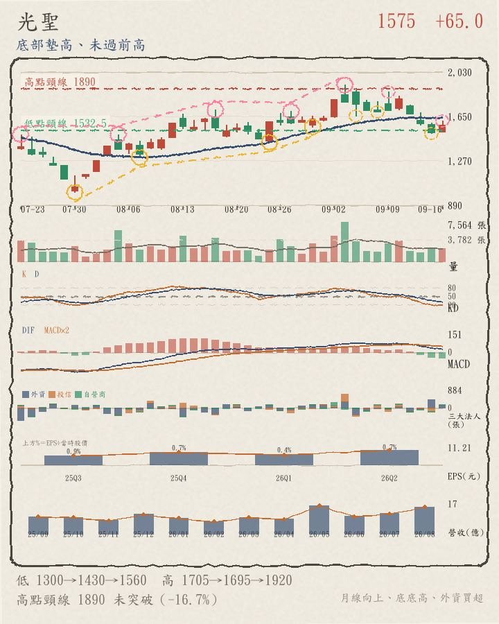
今天收紅、但成交量比平均少、跌破月線 1639.5，離高點頸線 1890 還差 16.7%，底部還在墊高（但高點沒同步創高）。
- 月線位置：收盤 1575 在月線 1639.5 之下；5 日線 1629 也在月線之下（短均在下）；月線向上、5 日線走平或向下
- 量能：成交量是 20 日均量的 0.88 倍，比 20 日均量少一些；收紅但量縮，量價背離
- 關鍵價位：高點頸線 1890 還沒突破，差 16.7%；最近轉折高點 1920（低於 18.0%）；最近轉折低點 1560（高於 1.0%）
- 轉折結構：低點 1300、1430、1560 墊高 20.0%（底底高），但高點 1705、1695、1920 沒有同步創高；還沒確認的轉折低點 09-08 1690、09-15 1505；還沒確認的轉折高點 09-09 1860、09-16 1610（圖上虛線小圈）
上升趨勢（底底高＋頭頭高） 成交金額 37.43 億・全榜第 53 名（上市第 41 名）
好條件 5/8：月線向上、底底高、頭頭高、突破頸線、相對大盤強
不好條件 3/8：跌破前低、在月線之下、外資賣超
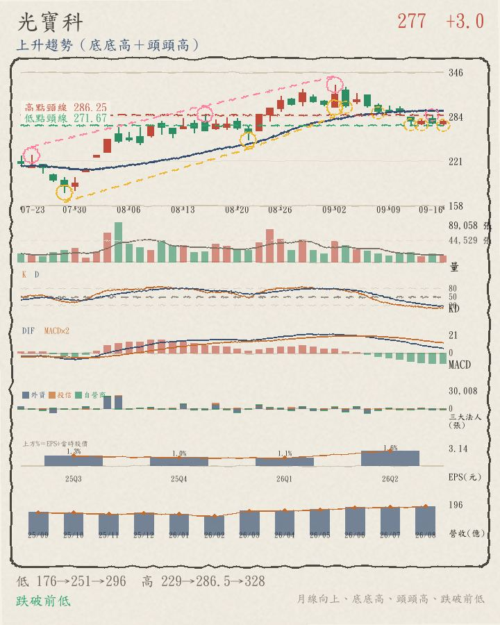
今天收紅、但成交量比平均少、跌破月線 292.15，已站上高點頸線 231.5，轉折結構仍是底底高＋頭頭高。
- 月線位置：收盤 277 在月線 292.15 之下；5 日線 279.3 也在月線之下（短均在下）；月線向上、5 日線走平或向下
- 量能：成交量是 20 日均量的 0.44 倍，比 20 日均量少很多；收紅但量縮，量價背離
- 關鍵價位：高點頸線 231.5 已站上；最近轉折高點 328（低於 15.5%）；最近轉折低點 296.5（低於 6.6%）
- 轉折結構：低點 176.5、251、296.5 一路墊高 68.0%、高點 229、286.5、328 也一路墊高 43.2%，是底底高＋頭頭高；還沒確認的轉折低點 09-14 272、09-16 271；還沒確認的轉折高點 09-15 286（圖上虛線小圈）
底部墊高、未過前高 成交金額 35.6 億・全榜第 54 名（上市第 42 名）
好條件 5/8：站上月線、月線向上、底底高、相對大盤強、量價攻擊（收紅＋大量）
不好條件 1/8：外資賣超
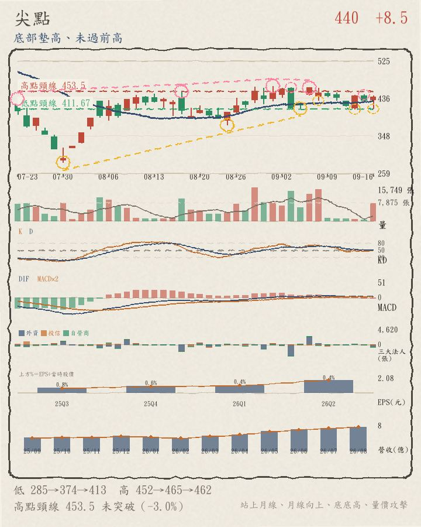
今天帶量收紅、站上月線 429.775，離高點頸線 453.5 還差 3.0%，底部還在墊高（但高點沒同步創高）。
- 月線位置：收盤 440 在月線 429.775 之上；5 日線 434.1 也在月線之上（短均在上）；月線向上、5 日線走平或向下
- 量能：成交量是 20 日均量的 1.30 倍，比 20 日均量大不少；收紅又量增，量價配合
- 關鍵價位：高點頸線 453.5 還沒突破，差 3.0%；最近轉折高點 462（低於 4.8%）；最近轉折低點 413（高於 6.5%）
- 轉折結構：低點 285、373.5、413 墊高 44.9%（底底高），但高點 452、465、462 沒有同步創高；還沒確認的轉折低點 09-14 410.5、09-16 411.5；還沒確認的轉折高點 09-03 462、09-15 445（圖上虛線小圈）
上升趨勢（底底高＋頭頭高） 成交金額 35.48 億・全榜第 55 名（上市第 43 名）
好條件 8/8：站上月線、月線向上、底底高、頭頭高、突破頸線、相對大盤強、外資買超、量價攻擊（收紅＋大量）
不好條件 0/8：無
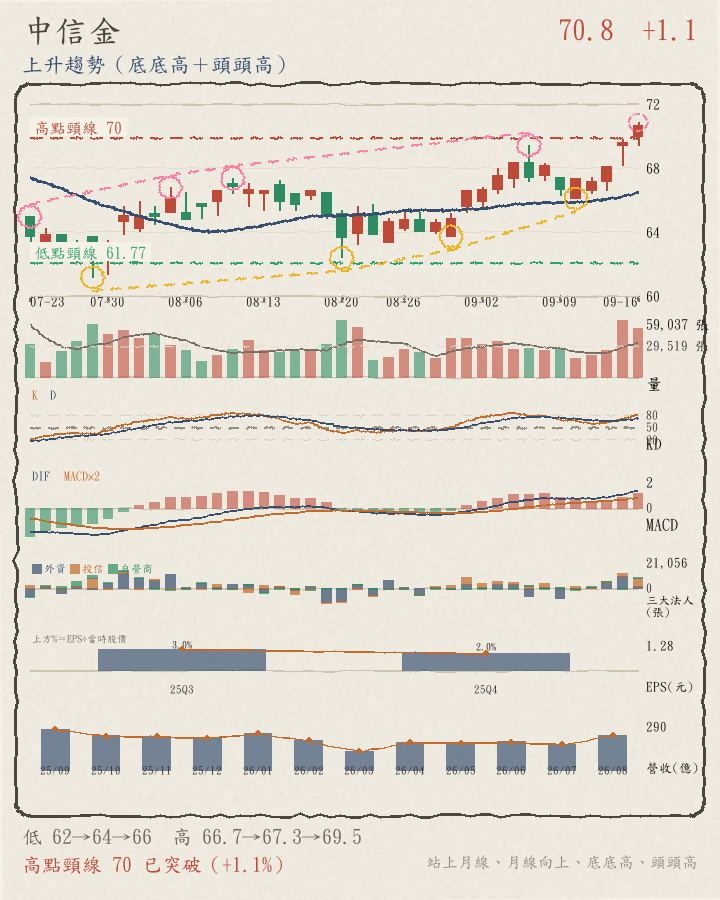
今天帶量收紅、站上月線 66.41，已站上高點頸線 70，轉折結構仍是底底高＋頭頭高。
- 月線位置：收盤 70.8 在月線 66.41 之上；5 日線 68.6 也在月線之上（短均在上）；月線向上、5 日線向上
- 量能：成交量是 20 日均量的 1.55 倍，比 20 日均量大不少；收紅又量增，量價配合
- 關鍵價位：高點頸線 70 已站上；最近轉折高點 69.5（高於 1.9%）；最近轉折低點 66（高於 7.3%）
- 轉折結構：低點 62.1、63.5、66 一路墊高 6.3%、高點 66.7、67.3、69.5 也一路墊高 4.2%，是底底高＋頭頭高；還沒確認的轉折高點 09-16 71（圖上虛線小圈）
底部墊高、未過前高 成交金額 34.14 億・全榜第 57 名（上市第 44 名）
好條件 4/8：月線向上、底底高、突破頸線、相對大盤強
不好條件 3/8：跌破前低、在月線之下、外資賣超
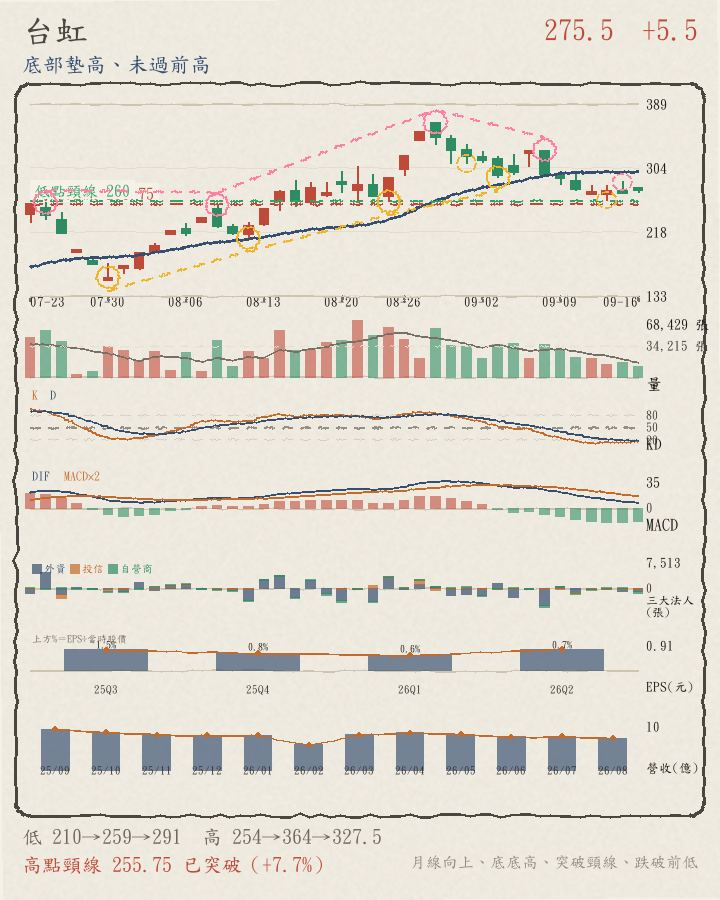
今天收紅、但成交量比平均少、跌破月線 298.275，已站上高點頸線 255.75，底部還在墊高（但高點沒同步創高）。
- 月線位置：收盤 275.5 在月線 298.275 之下；5 日線 273.3 也在月線之下（短均在下）；月線向上、5 日線走平或向下
- 量能：成交量是 20 日均量的 0.33 倍，比 20 日均量少很多；收紅但量縮，量價背離
- 關鍵價位：高點頸線 255.75 已站上；最近轉折高點 327.5（低於 15.9%）；最近轉折低點 291（低於 5.3%）
- 轉折結構：低點 210.5、259、291 墊高 38.2%（底底高），但高點 254、364、327.5 沒有同步創高；還沒確認的轉折低點 09-01 309.5、09-14 261；還沒確認的轉折高點 09-15 285（圖上虛線小圈）
高點墊高、底部不穩 成交金額 33.62 億・全榜第 58 名（上市第 45 名）
好條件 5/8：站上月線、月線向上、頭頭高、相對大盤強、外資買超
不好條件 0/8：無
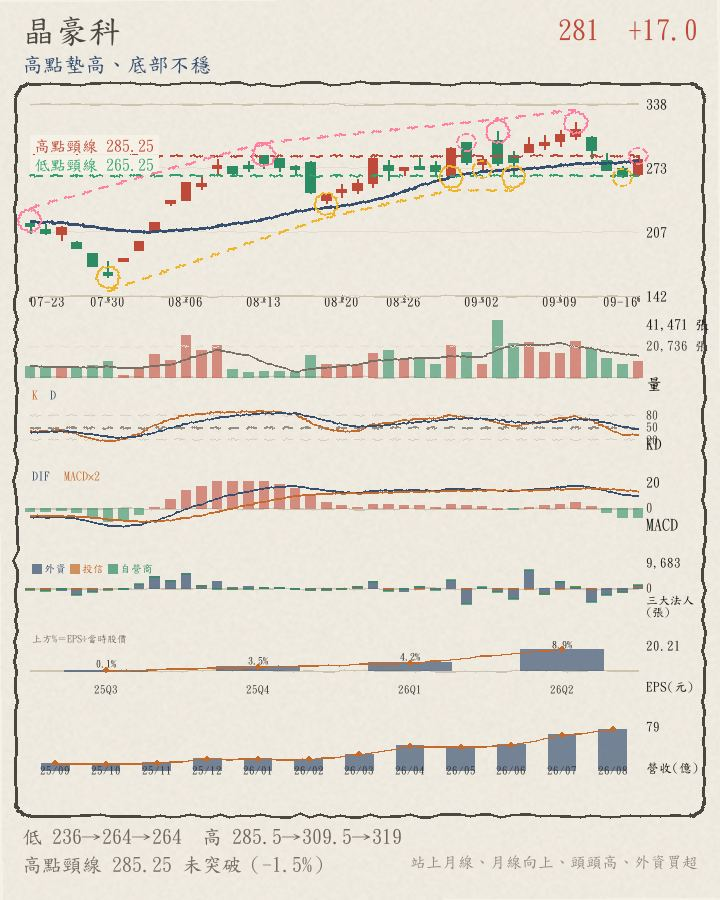
今天收紅、但成交量比平均少、站上月線 280.2，離高點頸線 309.17 還差 9.1%，高點還在墊高（但底部沒同步墊高）。
- 月線位置：收盤 281 在月線 280.2 之上；5 日線 283.6 也在月線之上（短均在上）；月線向上、5 日線走平或向下
- 量能：成交量是 20 日均量的 0.66 倍，比 20 日均量少很多；收紅但量縮，量價背離
- 關鍵價位：高點頸線 309.17 還沒突破，差 9.1%；最近轉折高點 319（低於 11.9%）；最近轉折低點 263.5（高於 6.6%）
- 轉折結構：高點 285.5、309.5、319 墊高 11.7%（頭頭高），但低點 236、263.5、263.5 沒有同步墊高；還沒確認的轉折低點 09-02 271、09-15 263；還沒確認的轉折高點 09-01 299、09-16 285（圖上虛線小圈）
上升趨勢（底底高＋頭頭高） 成交金額 33.04 億・全榜第 59 名（上市第 46 名）
好條件 7/8：站上月線、月線向上、底底高、頭頭高、突破頸線、相對大盤強、外資買超
不好條件 0/8：無
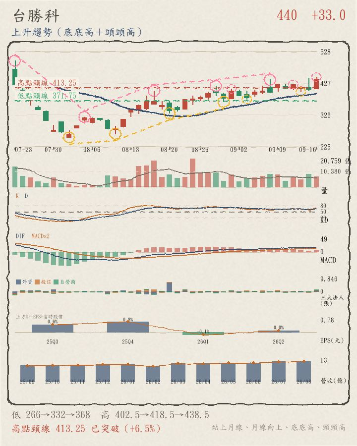
今天收紅、但成交量比平均少、站上月線 394，已站上高點頸線 413.25，轉折結構仍是底底高＋頭頭高。
- 月線位置：收盤 440 在月線 394 之上；5 日線 419.2 也在月線之上（短均在上）；月線向上、5 日線向上
- 量能：成交量是 20 日均量的 0.93 倍，比 20 日均量少一些；收紅但量縮，量價背離
- 關鍵價位：高點頸線 413.25 已站上；最近轉折高點 438.5（高於 0.3%）；最近轉折低點 367.5（高於 19.7%）
- 轉折結構：低點 265.5、331.5、367.5 一路墊高 38.4%、高點 402.5、418.5、438.5 也一路墊高 8.9%，是底底高＋頭頭高；還沒確認的轉折低點 09-03 376、09-14 400；還沒確認的轉折高點 09-11 423.5、09-16 447（圖上虛線小圈）
區間或轉弱 成交金額 31.6 億・全榜第 61 名（上市第 47 名）
好條件 5/8：站上月線、月線向上、突破頸線、相對大盤強、量價攻擊（收紅＋大量）
不好條件 1/8：外資賣超
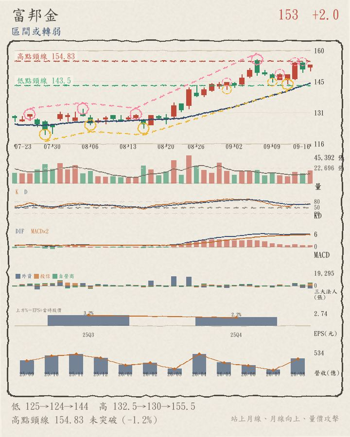
今天收紅、站上月線 144.5，已站上高點頸線 150.75，轉折還沒走出明顯方向。
- 月線位置：收盤 153 在月線 144.5 之上；5 日線 151 也在月線之上（短均在上）；月線向上、5 日線向上
- 量能：成交量是 20 日均量的 1.03 倍，跟 20 日均量差不多
- 關鍵價位：高點頸線 150.75 已站上；最近轉折高點 155.5（低於 1.6%）；最近轉折低點 144（高於 6.2%）
- 轉折結構：低點 125、123.5、144 與高點 132.5、130、155.5 都沒有明顯遞增，屬於區間震盪或轉弱；還沒確認的轉折低點 09-01 141.5、09-09 145；還沒確認的轉折高點 09-14 154.5、09-15 154.5（圖上虛線小圈）
區間或轉弱 成交金額 30.84 億・全榜第 62 名（上市第 48 名）
好條件 0/8：無
不好條件 5/8：跌破前低、相對大盤弱、在月線之下、外資賣超、月線下彎
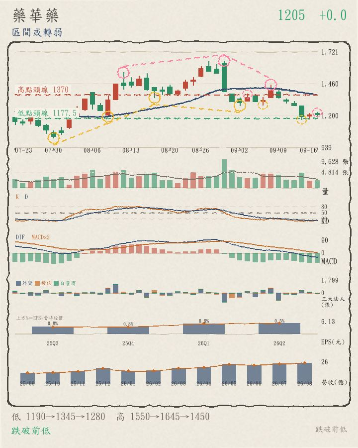
今天收黑、成交量也比平均少、跌破月線 1368.75，跌破前一個轉折低點（高點頸線 1370 還在收盤上方），轉折還沒走出明顯方向。
- 月線位置：收盤 1205 在月線 1368.75 之下；5 日線 1240 也在月線之下（短均在下）；月線走平或向下、5 日線走平或向下
- 量能：成交量是 20 日均量的 0.62 倍，比 20 日均量少很多
- 關鍵價位：高點頸線 1370 還沒突破、還在收盤上方 12.0%；最近轉折高點 1450（低於 16.9%）；最近轉折低點 1280（低於 5.9%）
- 轉折結構：低點 1190、1345、1280 與高點 1550、1645、1450 都沒有明顯遞增，屬於區間震盪或轉弱；還沒確認的轉折低點 09-07 1285、09-14 1165；還沒確認的轉折高點 09-03 1375、09-16 1225（圖上虛線小圈）
高點墊高、底部不穩 成交金額 30.65 億・全榜第 63 名（上市第 49 名）
好條件 5/8：站上月線、月線向上、頭頭高、相對大盤強、外資買超
不好條件 0/8：無
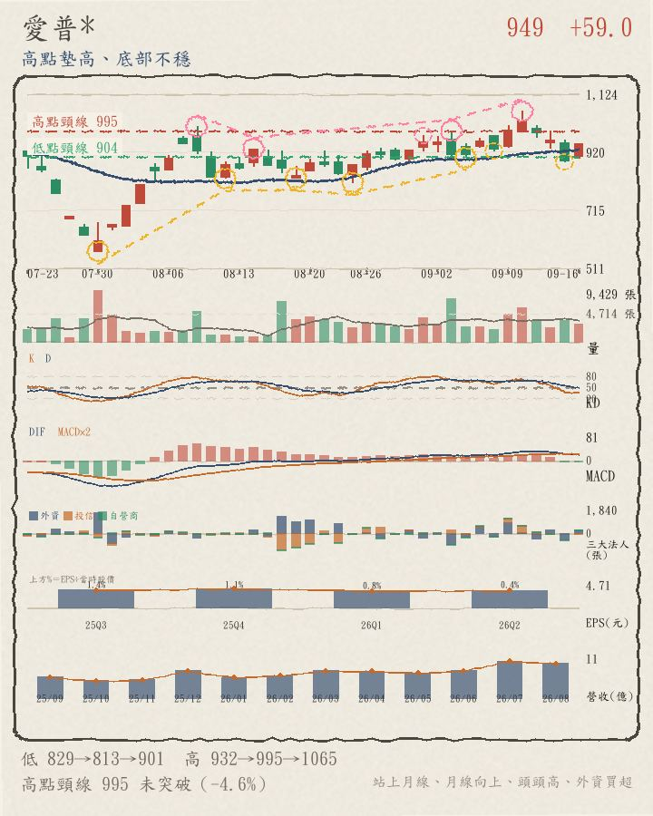
今天收紅、但成交量比平均少、站上月線 929.4，離高點頸線 995 還差 4.6%，高點還在墊高（但底部沒同步墊高）。
- 月線位置：收盤 949 在月線 929.4 之上；5 日線 963.8 也在月線之上（短均在上）；月線向上、5 日線向上
- 量能：成交量是 20 日均量的 0.86 倍，比 20 日均量少一些；收紅但量縮，量價背離
- 關鍵價位：高點頸線 995 還沒突破，差 4.6%；最近轉折高點 1065（低於 10.9%）；最近轉折低點 901（高於 5.3%）
- 轉折結構：高點 932、995、1065 墊高 14.3%（頭頭高），但低點 829、813、901 沒有同步墊高；還沒確認的轉折低點 09-08 924、09-15 887；還沒確認的轉折高點 09-01 980（圖上虛線小圈）
區間或轉弱 成交金額 30.51 億・全榜第 64 名（上市第 50 名）
好條件 4/8：站上月線、月線向上、相對大盤強、量價攻擊（收紅＋大量）
不好條件 1/8：外資賣超
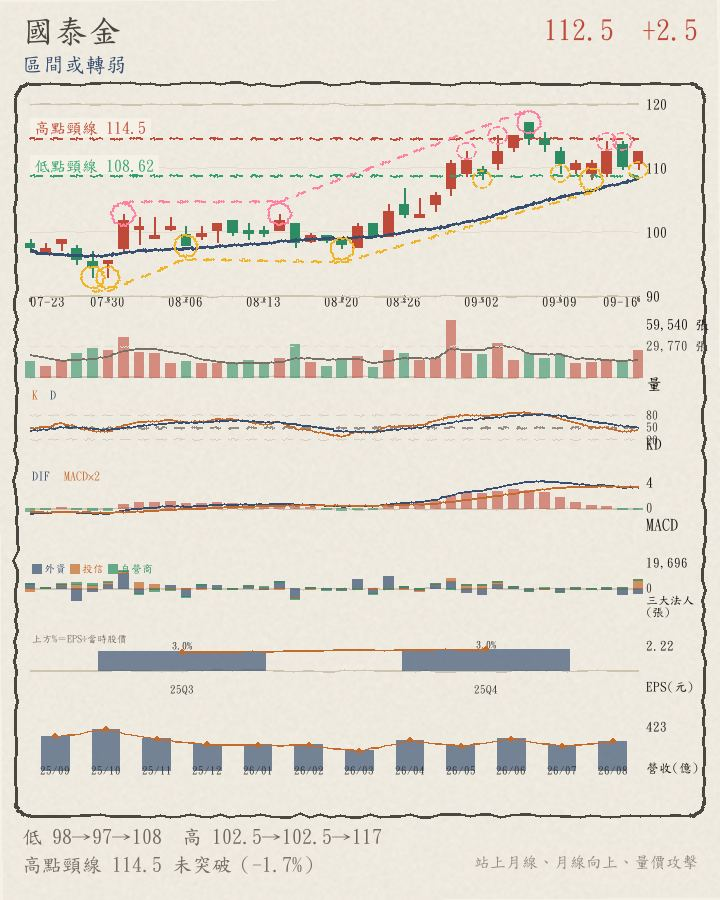
今天帶量收紅、站上月線 108.155，離高點頸線 114.5 還差 1.7%，轉折還沒走出明顯方向。
- 月線位置：收盤 112.5 在月線 108.155 之上；5 日線 111.2 也在月線之上（短均在上）；月線向上、5 日線走平或向下
- 量能：成交量是 20 日均量的 1.24 倍，比 20 日均量大不少；收紅又量增，量價配合
- 關鍵價位：高點頸線 114.5 還沒突破，差 1.7%；最近轉折高點 117（低於 3.8%）；最近轉折低點 108（高於 4.2%）
- 轉折結構：低點 97.5、97、108 與高點 102.5、102.5、117 都沒有明顯遞增，屬於區間震盪或轉弱；還沒確認的轉折低點 09-09 109、09-16 109.5；還沒確認的轉折高點 09-14 114、09-15 114（圖上虛線小圈）
高點墊高、底部不穩 成交金額 156.75 億・全榜第 7 名（上櫃第 1 名）
好條件 4/8：月線向上、頭頭高、相對大盤強、量價攻擊（收紅＋大量）
不好條件 2/8：在月線之下、外資賣超

今天帶量收紅、跌破月線 3032.25，離高點頸線 2880 還差 2.6%，高點還在墊高（但底部沒同步墊高）。
- 月線位置：收盤 2805 在月線 3032.25 之下；5 日線 2773 也在月線之下（短均在下）；月線向上、5 日線走平或向下
- 量能：成交量是 20 日均量的 1.45 倍，比 20 日均量大不少；收紅又量增，量價配合
- 關鍵價位：高點頸線 2880 還沒突破，差 2.6%；最近轉折高點 3600（低於 22.1%）；最近轉折低點 1450（高於 93.4%）
- 轉折結構：高點 2010、3065、3600 墊高 79.1%（頭頭高），但低點 1668.18、1335、1450 沒有同步墊高；還沒確認的轉折低點 09-04 2980、09-15 2650；還沒確認的轉折高點 09-14 2830、09-16 2930（圖上虛線小圈）
區間或轉弱 成交金額 134.1 億・全榜第 11 名（上櫃第 2 名）
好條件 5/8：站上月線、月線向上、相對大盤強、外資買超、量價攻擊（收紅＋大量）
不好條件 0/8：無

今天收紅、站上月線 435.3，離高點頸線 484.5 還差 2.5%，轉折還沒走出明顯方向。
- 月線位置：收盤 472.5 在月線 435.3 之上；5 日線 453.9 也在月線之上（短均在上）；月線向上、5 日線向上
- 量能：成交量是 20 日均量的 1.04 倍，跟 20 日均量差不多
- 關鍵價位：高點頸線 484.5 還沒突破，差 2.5%；最近轉折高點 478（低於 1.2%）；最近轉折低點 438.5（高於 7.8%）
- 轉折結構：低點 351、349.5、438.5 與高點 492、492、478 都沒有明顯遞增，屬於區間震盪或轉弱；還沒確認的轉折低點 09-08 440、09-14 420；還沒確認的轉折高點 09-15 476（圖上虛線小圈）
區間或轉弱 成交金額 130.52 億・全榜第 12 名（上櫃第 3 名）
好條件 5/8：站上月線、月線向上、突破頸線、相對大盤強、量價攻擊（收紅＋大量）
不好條件 1/8：外資賣超

今天帶量收紅、站上月線 182.9，已站上高點頸線 204，轉折還沒走出明顯方向。
- 月線位置：收盤 207.5 在月線 182.9 之上；5 日線 193.6 也在月線之上（短均在上）；月線向上、5 日線向上
- 量能：成交量是 20 日均量的 1.72 倍，比 20 日均量大不少；收紅又量增，量價配合
- 關鍵價位：高點頸線 204 已站上；最近轉折高點 203（高於 2.2%）；最近轉折低點 152（高於 36.5%）
- 轉折結構：低點 113.5、155.5、152 與高點 171、203、203 都沒有明顯遞增，屬於區間震盪或轉弱；還沒確認的轉折低點 09-03 174、09-14 171；還沒確認的轉折高點 09-04 202.5、09-16 207.5（圖上虛線小圈）
底部墊高、未過前高 成交金額 98.81 億・全榜第 19 名（上櫃第 4 名）
好條件 6/8：站上月線、月線向上、底底高、相對大盤強、外資買超、量價攻擊（收紅＋大量）
不好條件 0/8：無

今天帶量收紅、站上月線 489.9，離高點頸線 532.5 還差 4.2%，底部還在墊高（但高點沒同步創高）。
- 月線位置：收盤 510 在月線 489.9 之上；5 日線 503.2 也在月線之上（短均在上）；月線向上、5 日線走平或向下
- 量能：成交量是 20 日均量的 1.06 倍，比 20 日均量大一些；收紅又量增，量價配合
- 關鍵價位：高點頸線 532.5 還沒突破，差 4.2%；最近轉折高點 535（低於 4.7%）；最近轉折低點 469.5（高於 8.6%）
- 轉折結構：低點 392、399、469.5 墊高 19.8%（底底高），但高點 462、564、535 沒有同步創高；還沒確認的轉折低點 09-14 477；還沒確認的轉折高點 09-14 530（圖上虛線小圈）
區間或轉弱 成交金額 96.74 億・全榜第 20 名（上櫃第 5 名）
好條件 3/8：相對大盤強、外資買超、量價攻擊（收紅＋大量）
不好條件 2/8：在月線之下、月線下彎

今天帶量收紅、跌破月線 1424.75，離高點頸線 1435 還差 1.4%，轉折還沒走出明顯方向。
- 月線位置：收盤 1415 在月線 1424.75 之下；5 日線 1391 也在月線之下（短均在下）；月線走平或向下、5 日線向上
- 量能：成交量是 20 日均量的 1.31 倍，比 20 日均量大不少；收紅又量增，量價配合
- 關鍵價位：高點頸線 1435 還沒突破，差 1.4%；最近轉折高點 1430（低於 1.0%）；最近轉折低點 1295（高於 9.3%）
- 轉折結構：低點 1455、1395、1295 與高點 1730、1565、1430 都沒有明顯遞增，屬於區間震盪或轉弱；還沒確認的轉折低點 09-14 1320、09-16 1345；還沒確認的轉折高點 09-16 1460（圖上虛線小圈）
上升趨勢（底底高＋頭頭高） 成交金額 85.49 億・全榜第 26 名（上櫃第 6 名）
好條件 7/8：站上月線、月線向上、底底高、頭頭高、相對大盤強、外資買超、量價攻擊（收紅＋大量）
不好條件 0/8：無

今天帶量收紅、站上月線 254，離高點頸線 322 還差 2.2%，轉折結構仍是底底高＋頭頭高。
- 月線位置：收盤 315 在月線 254 之上；5 日線 297.6 也在月線之上（短均在上）；月線向上、5 日線向上
- 量能：成交量是 20 日均量的 1.46 倍，比 20 日均量大不少；收紅又量增，量價配合
- 關鍵價位：高點頸線 322 還沒突破，差 2.2%；最近轉折高點 270.5（高於 16.5%）；最近轉折低點 265.5（高於 18.6%）
- 轉折結構：低點 189.5、190.5、265.5 一路墊高 40.1%、高點 178、230、270.5 也一路墊高 52.0%，是底底高＋頭頭高；還沒確認的轉折低點 09-03 237.5、09-14 272.5；還沒確認的轉折高點 09-11 321、09-16 323（圖上虛線小圈）
區間或轉弱 成交金額 62.32 億・全榜第 31 名（上櫃第 7 名）
好條件 4/8：站上月線、月線向上、相對大盤強、量價攻擊（收紅＋大量）
不好條件 1/8：外資賣超

今天帶量收紅、站上月線 1255.1，離高點頸線 1470 還差 7.5%，轉折還沒走出明顯方向。
- 月線位置：收盤 1360 在月線 1255.1 之上；5 日線 1345 也在月線之上（短均在上）；月線向上、5 日線走平或向下
- 量能：成交量是 20 日均量的 1.41 倍，比 20 日均量大不少；收紅又量增，量價配合
- 關鍵價位：高點頸線 1470 還沒突破，差 7.5%；最近轉折高點 1505（低於 9.6%）；最近轉折低點 1300（高於 4.6%）
- 轉折結構：低點 1000、955、1300 與高點 1080、1080、1505 都沒有明顯遞增，屬於區間震盪或轉弱；還沒確認的轉折低點 09-03 1320、09-15 1240；還沒確認的轉折高點 09-10 1440、09-16 1375（圖上虛線小圈）
區間或轉弱 成交金額 59.81 億・全榜第 33 名（上櫃第 8 名）
好條件 1/8：相對大盤強
不好條件 3/8：在月線之下、外資賣超、月線下彎

今天收紅、但成交量比平均少、跌破月線 951.75，離高點頸線 1004.4 還差 6.7%，轉折還沒走出明顯方向。
- 月線位置：收盤 937 在月線 951.75 之下；5 日線 914 也在月線之下（短均在下）；月線走平或向下、5 日線走平或向下
- 量能：成交量是 20 日均量的 0.80 倍，比 20 日均量少很多；收紅但量縮，量價背離
- 關鍵價位：高點頸線 1004.4 還沒突破，差 6.7%；最近轉折高點 1015（低於 7.7%）；最近轉折低點 875（高於 7.1%）
- 轉折結構：低點 823、931、875 與高點 1035、1015、1015 都沒有明顯遞增，屬於區間震盪或轉弱；還沒確認的轉折低點 09-08 944、09-14 872；還沒確認的轉折高點 09-01 998、09-15 959（圖上虛線小圈）
底部墊高、未過前高 成交金額 54.81 億・全榜第 39 名（上櫃第 9 名）
好條件 3/8：底底高、相對大盤強、外資買超
不好條件 2/8：在月線之下、月線下彎

今天收紅、但成交量比平均少、跌破月線 2062.5，離高點頸線 2175 還差 8.7%，底部還在墊高（但高點沒同步創高）。
- 月線位置：收盤 1985 在月線 2062.5 之下；5 日線 1979 也在月線之下（短均在下）；月線走平或向下、5 日線走平或向下
- 量能：成交量是 20 日均量的 0.78 倍，比 20 日均量少很多；收紅但量縮，量價背離
- 關鍵價位：高點頸線 2175 還沒突破，差 8.7%；最近轉折高點 2160（低於 8.1%）；最近轉折低點 1970（高於 0.8%）
- 轉折結構：低點 1445、1905、1970 墊高 36.3%（底底高），但高點 2215、2195、2160 沒有同步創高；還沒確認的轉折低點 09-15 1900；還沒確認的轉折高點 09-03 2120、09-16 1985（圖上虛線小圈）
高點墊高、底部不穩 成交金額 54.07 億・全榜第 40 名（上櫃第 10 名）
好條件 5/8：站上月線、月線向上、頭頭高、突破頸線、相對大盤強
不好條件 1/8：外資賣超

今天收紅、站上月線 401.2，已站上高點頸線 340，高點還在墊高（但底部沒同步墊高）。
- 月線位置：收盤 424 在月線 401.2 之上；5 日線 442.7 也在月線之上（短均在上）；月線向上、5 日線走平或向下
- 量能：成交量是 20 日均量的 0.97 倍，跟 20 日均量差不多
- 關鍵價位：高點頸線 340 已站上；最近轉折高點 496（低於 14.5%）；最近轉折低點 289（高於 46.7%）
- 轉折結構：高點 328.5、431、496 墊高 51.0%（頭頭高），但低點 301、288、289 沒有同步墊高；還沒確認的轉折低點 09-03 393、09-15 407；還沒確認的轉折高點 09-16 436（圖上虛線小圈）
區間或轉弱 成交金額 51.04 億・全榜第 42 名（上櫃第 11 名）
好條件 3/8：站上月線、月線向上、相對大盤強
不好條件 1/8：外資賣超

今天收紅、但成交量比平均少、站上月線 116.887，離高點頸線 132.29 還差 10.4%，轉折還沒走出明顯方向。
- 月線位置：收盤 118.5 在月線 116.887 之上；5 日線 121.3 也在月線之上（短均在上）；月線向上、5 日線向上
- 量能：成交量是 20 日均量的 0.52 倍，比 20 日均量少很多；收紅但量縮，量價背離
- 關鍵價位：高點頸線 132.29 還沒突破，差 10.4%；最近轉折高點 135（低於 12.2%）；最近轉折低點 108.571（高於 9.1%）
- 轉折結構：低點 70.857、56.2856、108.571 與高點 95.1427、89.4284、135 都沒有明顯遞增，屬於區間震盪或轉弱；還沒確認的轉折低點 09-08 117.143、09-15 114.5；還沒確認的轉折高點 09-11 129、09-16 121.5（圖上虛線小圈）
區間或轉弱 成交金額 49.18 億・全榜第 45 名（上櫃第 12 名）
好條件 3/8：站上月線、相對大盤強、外資買超
不好條件 1/8：月線下彎

今天收紅、但成交量比平均少、站上月線 108.6，離高點頸線 116.38 還差 3.8%，轉折還沒走出明顯方向。
- 月線位置：收盤 112 在月線 108.6 之上；5 日線 106.8 也在月線之下（短均在下）；月線走平或向下、5 日線走平或向下
- 量能：成交量是 20 日均量的 0.95 倍，跟 20 日均量差不多；收紅但量縮，量價背離
- 關鍵價位：高點頸線 116.38 還沒突破，差 3.8%；最近轉折高點 119（低於 5.9%）；最近轉折低點 104（高於 7.7%）
- 轉折結構：低點 89.8、103.5、104 與高點 131、117.5、119 都沒有明顯遞增，屬於區間震盪或轉弱；還沒確認的轉折低點 09-08 109、09-14 100；還沒確認的轉折高點 09-01 116、09-16 113（圖上虛線小圈）
上升趨勢（底底高＋頭頭高） 成交金額 34.58 億・全榜第 56 名（上櫃第 13 名）
好條件 7/8：站上月線、月線向上、底底高、頭頭高、突破頸線、相對大盤強、外資買超
不好條件 0/8：無

今天收紅、站上月線 137.215，已站上高點頸線 142.25，轉折結構仍是底底高＋頭頭高。
- 月線位置：收盤 186 在月線 137.215 之上；5 日線 166.6 也在月線之上（短均在上）；月線向上、5 日線向上
- 量能：成交量是 20 日均量的 0.97 倍，跟 20 日均量差不多
- 關鍵價位：高點頸線 142.25 已站上；最近轉折高點 144（高於 29.2%）；最近轉折低點 123.5（高於 50.6%）
- 轉折結構：低點 62.2、77.9、123.5 一路墊高 98.6%、高點 95.8、140.5、144 也一路墊高 50.3%，是底底高＋頭頭高；還沒確認的轉折低點 09-02 130；還沒確認的轉折高點 09-16 186（圖上虛線小圈）
高點墊高、底部不穩 成交金額 32.63 億・全榜第 60 名（上櫃第 14 名）
好條件 6/8：站上月線、月線向上、頭頭高、突破頸線、相對大盤強、量價攻擊（收紅＋大量）
不好條件 1/8：外資賣超

今天帶量收紅、站上月線 1295，已站上高點頸線 1483.75，高點還在墊高（但底部沒同步墊高）。
- 月線位置：收盤 1595 在月線 1295 之上；5 日線 1392 也在月線之上（短均在上）；月線向上、5 日線向上
- 量能：成交量是 20 日均量的 2.55 倍，比 20 日均量大不少；收紅又量增，量價配合
- 關鍵價位：高點頸線 1483.75 已站上；最近轉折高點 1505（高於 6.0%）；最近轉折低點 1050（高於 51.9%）
- 轉折結構：高點 1250、1460、1505 墊高 20.4%（頭頭高），但低點 843、1050、1050 沒有同步墊高；還沒確認的轉折低點 09-04 1335、09-14 1235；還沒確認的轉折高點 09-07 1495、09-16 1595（圖上虛線小圈）
高點墊高、底部不穩 成交金額 29.56 億・全榜第 65 名（上櫃第 15 名）
好條件 4/8：站上月線、月線向上、頭頭高、相對大盤強
不好條件 0/8：無

今天收紅、但成交量比平均少、站上月線 17092.2，離高點頸線 18603.3 還差 1.9%，高點還在墊高（但底部沒同步墊高）。
- 月線位置：收盤 18250 在月線 17092.2 之上；5 日線 18067 也在月線之上（短均在上）；月線向上、5 日線走平或向下
- 量能：成交量是 20 日均量的 0.58 倍，比 20 日均量少很多；收紅但量縮，量價背離
- 關鍵價位：高點頸線 18603.3 還沒突破，差 1.9%；最近轉折高點 19795（低於 7.8%）；最近轉折低點 14600（高於 25.0%）
- 轉折結構：高點 16210、18600、19795 墊高 22.1%（頭頭高），但低點 12210、15930、14600 沒有同步墊高；還沒確認的轉折低點 09-14 17170；還沒確認的轉折高點 09-03 18790、09-16 18420（圖上虛線小圈）
區間或轉弱 成交金額 27.88 億・全榜第 66 名（上櫃第 16 名）
好條件 3/8：站上月線、月線向上、突破頸線
不好條件 4/8：今日下跌、相對大盤弱、量增下跌（出貨）、外資賣超
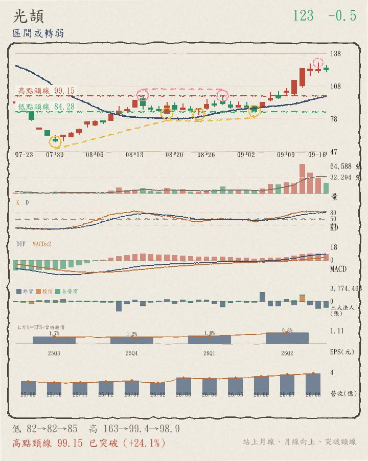
今天帶量收黑、站上月線 98.63，已站上高點頸線 99.15，轉折還沒走出明顯方向。
- 月線位置：收盤 123 在月線 98.63 之上；5 日線 121.7 也在月線之上（短均在上）；月線向上、5 日線向上
- 量能：成交量是 20 日均量的 1.45 倍，比 20 日均量大不少；收黑卻量增，量價背離
- 關鍵價位：高點頸線 99.15 已站上；最近轉折高點 98.9（高於 24.4%）；最近轉折低點 84.8（高於 45.0%）
- 轉折結構：低點 82.5、81.8、84.8 與高點 163、99.4、98.9 都沒有明顯遞增，屬於區間震盪或轉弱；還沒確認的轉折高點 09-15 129.5（圖上虛線小圈）
高點墊高、底部不穩 成交金額 25.39 億・全榜第 67 名（上櫃第 17 名）
好條件 5/8：站上月線、月線向上、頭頭高、相對大盤強、量價攻擊（收紅＋大量）
不好條件 1/8：外資賣超
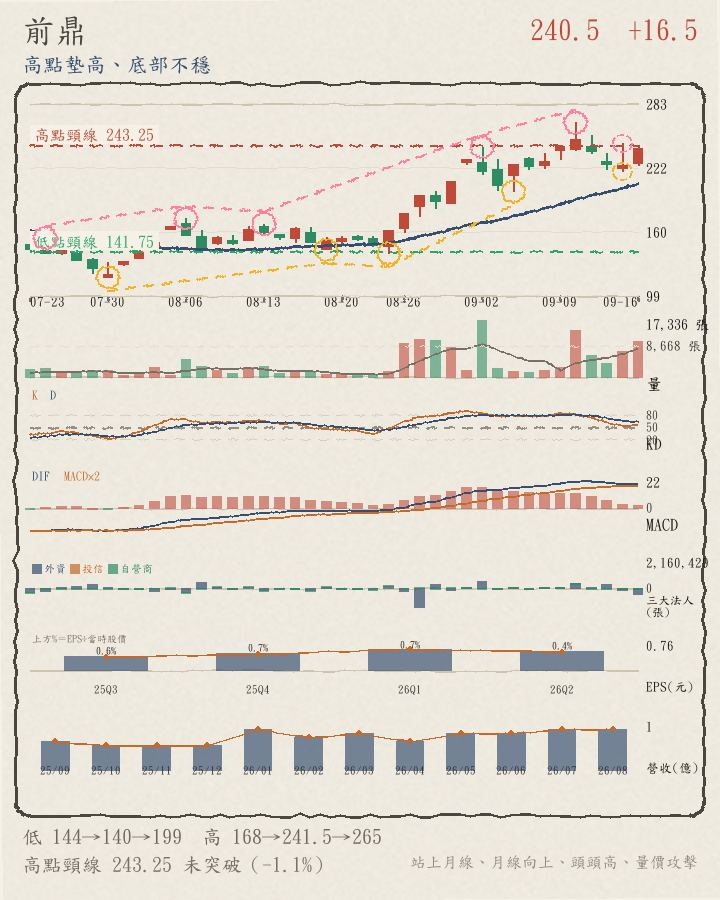
今天帶量收紅、站上月線 206.725，離高點頸線 243.25 還差 1.1%，高點還在墊高（但底部沒同步墊高）。
- 月線位置：收盤 240.5 在月線 206.725 之上；5 日線 235.3 也在月線之上（短均在上）；月線向上、5 日線向上
- 量能：成交量是 20 日均量的 1.98 倍，比 20 日均量大不少；收紅又量增，量價配合
- 關鍵價位：高點頸線 243.25 還沒突破，差 1.1%；最近轉折高點 265（低於 9.2%）；最近轉折低點 199（高於 20.9%）
- 轉折結構：高點 168、241.5、265 墊高 57.7%（頭頭高），但低點 143.5、140、199 沒有同步墊高；還沒確認的轉折低點 09-15 218；還沒確認的轉折高點 09-15 245（圖上虛線小圈）
上升趨勢（底底高＋頭頭高） 成交金額 23.6 億・全榜第 68 名（上櫃第 18 名）
好條件 7/8：站上月線、月線向上、底底高、頭頭高、相對大盤強、外資買超、量價攻擊（收紅＋大量）
不好條件 0/8：無
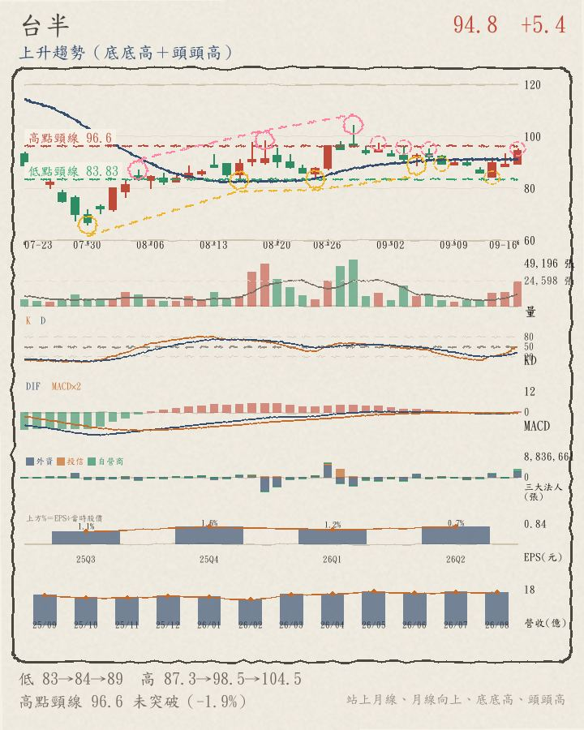
今天帶量收紅、站上月線 91.445，離高點頸線 96.6 還差 1.9%，轉折結構仍是底底高＋頭頭高。
- 月線位置：收盤 94.8 在月線 91.445 之上；5 日線 89.94 也在月線之下（短均在下）；月線向上、5 日線走平或向下
- 量能：成交量是 20 日均量的 1.46 倍，比 20 日均量大不少；收紅又量增，量價配合
- 關鍵價位：高點頸線 96.6 還沒突破，差 1.9%；最近轉折高點 104.5（低於 9.3%）；最近轉折低點 89（高於 6.5%）
- 轉折結構：低點 83.3、83.8、89 一路墊高 6.8%、高點 87.3、98.5、104.5 也一路墊高 19.7%，是底底高＋頭頭高；還沒確認的轉折低點 09-08 89.6、09-14 84.4；還沒確認的轉折高點 09-07 95.3、09-16 95.5（圖上虛線小圈）
區間或轉弱 成交金額 22.18 億・全榜第 69 名（上櫃第 19 名）
好條件 3/8：站上月線、相對大盤強、外資買超
不好條件 1/8：月線下彎
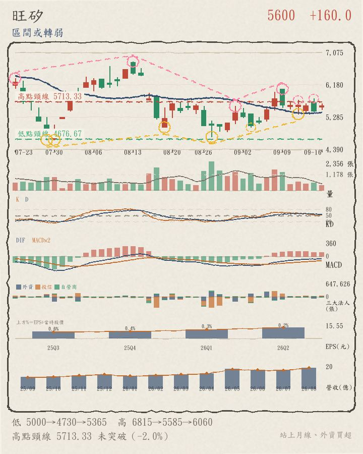
今天收紅、但成交量比平均少、站上月線 5412.25，離高點頸線 5713.33 還差 2.0%，轉折還沒走出明顯方向。
- 月線位置：收盤 5600 在月線 5412.25 之上；5 日線 5575 也在月線之上（短均在上）；月線走平或向下、5 日線向上
- 量能：成交量是 20 日均量的 0.38 倍，比 20 日均量少很多；收紅但量縮，量價背離
- 關鍵價位：高點頸線 5713.33 還沒突破，差 2.0%；最近轉折高點 6060（低於 7.6%）；最近轉折低點 5365（高於 4.4%）
- 轉折結構：低點 5000、4730、5365 與高點 6815、5585、6060 都沒有明顯遞增，屬於區間震盪或轉弱；還沒確認的轉折低點 09-03 5000；還沒確認的轉折高點 09-11 5755、09-15 5800（圖上虛線小圈）
高點墊高、底部不穩 成交金額 21.55 億・全榜第 70 名（上櫃第 20 名）
好條件 4/8：站上月線、月線向上、頭頭高、外資買超
不好條件 2/8：今日下跌、相對大盤弱
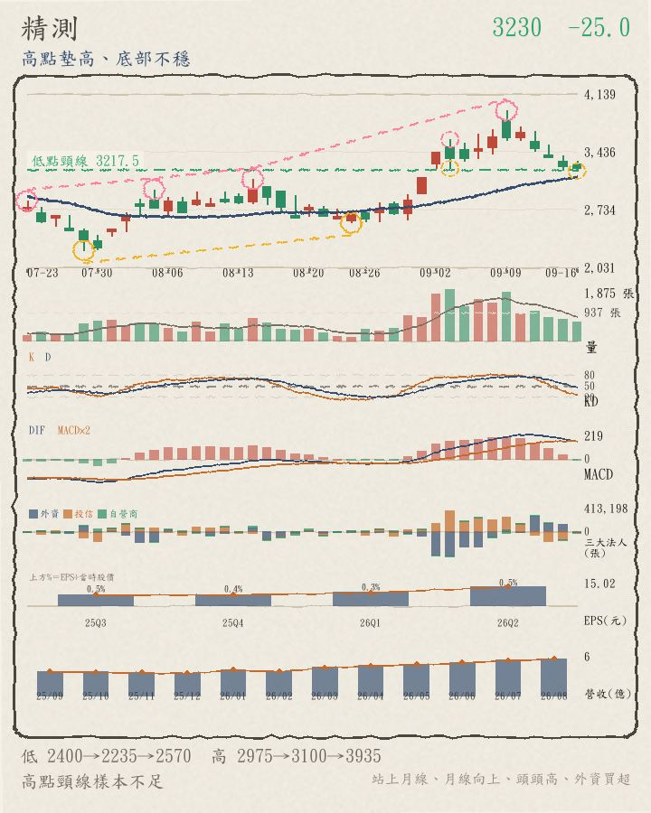
今天收黑、成交量也比平均少、站上月線 3129.75，高點還在墊高（但底部沒同步墊高）。
- 月線位置：收盤 3230 在月線 3129.75 之上；5 日線 3402 也在月線之上（短均在上）；月線向上、5 日線走平或向下
- 量能：成交量是 20 日均量的 0.76 倍，比 20 日均量少很多
- 關鍵價位：最近轉折高點 3935（低於 17.9%）；最近轉折低點 2570（高於 25.7%）
- 轉折結構：高點 2975、3100、3935 墊高 32.3%（頭頭高），但低點 2400、2235、2570 沒有同步墊高；還沒確認的轉折低點 09-03 3235、09-16 3200；還沒確認的轉折高點 09-03 3585（圖上虛線小圈）